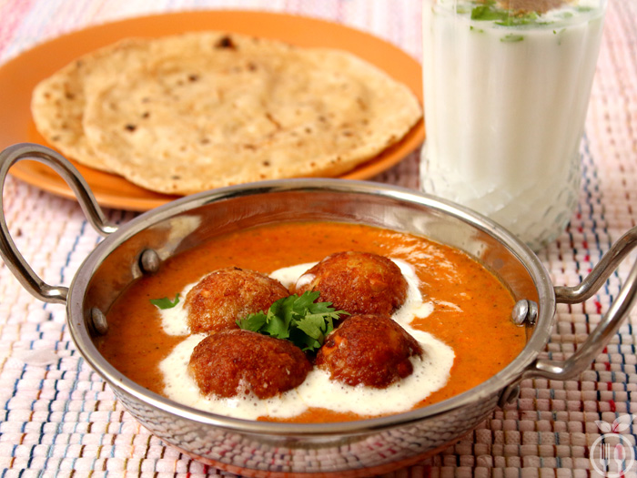

Ingredients:
1)200 gms Paneer
2)1 cup bread crumbs
3)1/2 tsp salt
4)1/4 tsp garam masala
5)10 - 15 raisins (khismish)
6)1 tblsp maida
7)Oil for frying
For the gravy:
1)2 tblsp oil
2)3 green cardamoms (choti elaichi)
3)1 green chilly
4)1/2 cup grated onion
5)1 tsp grated ginger
6)1 tsp grated garlic
7)1/2 tsp red chilly powder
8)1 tsp jeera powder
9)1 tsp corainder powder
10)1 tsp salt
11)5 medium tomatoes
12)2 pinch sugar
13)10 cashewnuts
14)1/2 cup milk
15)2 -3 tblsp cream
16)1/2 tsp garam masala
17)Coriander leaves for garnish
18)Green chillies for garnish
How to make malai kofta:
To make koftas :1.Grate the paneer and add the bread crumbs, salt and garam masala to it. Mix well and knead a soft dough of the mixture.
2.Divide this mixture into 4 equal parts. And then take a single ball and make it into a flat roti on your palm. Place 2 -3 raisins in the centre and then roll it back into either a ball or elongated shape kofta.
3.Sprinkle 1 tblsp of maida on a plate and roll this kofta in it. Coat the kofta with the cornflour and keep aside.
4.Repeat the same process for all the remaining balls.
5.Heat oil in a kadai and fry the koftas with a light hand. when light golden brown take them out. Do not over cook otherwise the paneer will get hard.
To Make the Gravy: 1.Blanch the tomatoes, peel the skin and puree them. Keep aside. Also soak the cashewnuts for 2 hrs and then grind it into fine paste.
1.Heat 2 tblsp oil in a kadai and add green cardamoms. Do open the cardamoms before you put in the oil. Then add 1 length wise slit green chilly. Now add grated onion.
3.Fry till light golden then add ginger and garlic. Fry for another minute.
4.Now add red chilly powder, coriander powder, jeera powder and salt. Put 1/4 cup of water so that the masala mixes well.
5.Add tomato puree and sugar. Let them simmer on medium flame for 8 - 10 mins or till oil separates.
6.Now add the cashewnut paste little by little stirring all the while. Keep the flame low.
7.Add 1/4 to 1/2 cup water and simmer for a minute. Then add milk which is at room temperature.Mix well and cook for another minute.
8.Now add 2 -3 tblsp cream and garam masala. Mix well
To serve in a platter place the koftas and then pour the gravy on top of it. Garnish with finely chopped green coriander and lengthwise slit green chillies.
Make swirls of cream. Malai kofta is ready to be served.
Note:
1. You can use melon seeds instead of cashewnuts
2. Milk should be at room temperature otherwise the gravy might cuddle.
3. You can even shallow fry the koftas instead of deep frying.
4. You can use red food color to get restaurant style color.